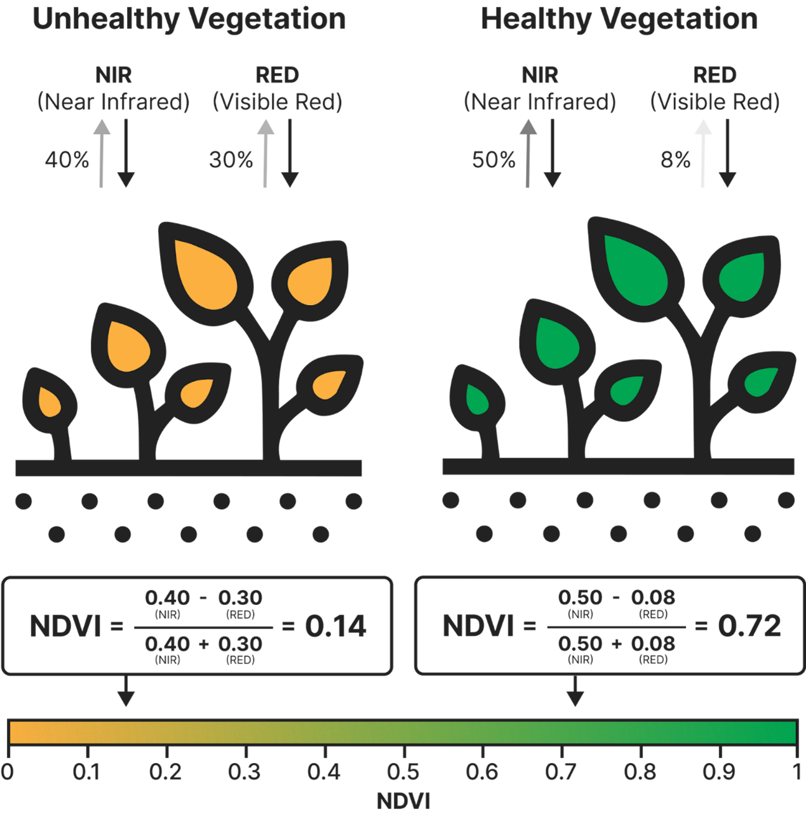
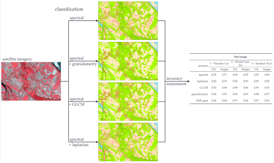

4 Week3 Corrections
4.1 Summary
4.1.1 Atmosphereic correction
4.1.1.1 Dark Object Subtraction (DOS)
The dark subtraction processor implements a simple empirical “atmospheric correction” method of calculation for the source product. This method searches for the darkest pixel value in each band and removes the scattering by subtracting that value from each pixel in the band, thus correcting the original satellite (or any other) image.
It is assumed that the darkest parts of the image (water, man-made structures) should be black if there is no effect of atmospheric scattering. A correction is made so that the black value of one band can be used to correct the remaining bands.
4.1.2 enhancement
4.1.2.1 Ratio: Normalised Difference Vegetation Index NDVI
It is a simple graphical metric commonly used to analyse remotely sensed measurements and to assess whether an observation target contains green and healthy vegetation. It quantifies vegetation based on measuring the difference between near-infrared (NIR), which is strongly reflected by vegetation, and red light, which is absorbed by vegetation/has low reflectivity. It’s calculated as follows:
The NDVI values range between -1 and 1, and will increase proportionally with vegetation growth. (An area without any growth will have an NDVI of zero.) An area with dense, healthy vegetation will have an NDVI of 1. An area with dense, healthy vegetation will have an NDVI of 1. An NDVI value of less than 0 indicates a lack of drylands. The NDVI of the ocean will be -1.)

Therefore, it can also be said that NDVI is an indicator of the health of green vegetation. Its accuracy and high correlation with the real state of the ground vegetation is very popular.
4.1.3 Texture
Texture is one of the most important features in the process of image interpretation and classification. Compared to other important spatial features (e.g., shape and size), it is relatively simple to use because it does not require prior image segmentation. In the lecture we learned about the use of grey scale covariance matrices (GLCM) to look at features in different regions.

4.1.4 PCA
PCA is used to remove redundant spectral information from multi-band datasets and is therefore a form of dimensionality reduction. We can specify whether to perform normalised PCA and the number of output components to be generated (all components will be output unless otherwise specified).
4.2 Applications
Ocean colour (OC) remote sensing is important for monitoring marine ecosystems. However, inversion of OC signals from top-of-atmosphere (TOA) radiance measured by satellite sensors remains a challenge because the inversion accuracy is highly dependent on the performance of atmospheric corrections and sensor calibration.
It has been studied that the performance of dark target subtraction is satisfactory for coastal and inland water applications of Landsat TM and SeaWiFS (Shanmugam and Ahn 2007). However, it is worth noting that this method’s ability to retrieve land surface reflectance properties with high accuracy is problematic for accurate atmospheric correction of satellite ocean colour images of aquatic environments. This is because the surface reflectance usually does not contain information about the water column. The residual radiance signal from the water column accounts for only 10-20 per cent of the TOA signal, which is much smaller than the contribution of surface reflected light to the TOA signal. While, Ilori, Pahlevan and Knudby (2019) found, by comparing estimated (OLI) and observed (AERONET-OC) Rrs values, that SeaDAS compared to other atmospheric correction methods performed the best in a variety of aquatic/ atmospheric conditions with the best overall performance.
The discovery of the Improved Dark Object Subtraction (IDOS) method has led to a significant improvement in the visual effect, image clarity and image contrast of remote sensing images; the atmospheric-corrected reflectance curves are closer to the measured typical object reflectance curves in both spectral shapes and reflectance values, which indicates that the algorithm has successfully eliminated the atmospheric influence. Compared with the traditional DOS technique, the accuracy and practicality of the IDOS method are greatly improved (Wang et al., 2019).
4.3 Reflections
The study of NDVI allowed me to better understand the examples given in the first lesson of CASA0024, as well as to know what atmospheric correction is and why this operational step is so important, also helped me to understand how to remove atmospheric influences from remotely sensed imagery in order to obtain more realistic information about surface reflectance. This process is important for increasing the value of remote sensing data for applications, whether it plays an integral role in land cover classification, vegetation monitoring or environmental assessment.
Second, texture is an essential component of the picture that can reveal details about the surface’s composition and structure, both of which are critical for remote sensing image interpretation. Different classes can be readily detected using the texture information of the image, which can lead to more accurate work in the future.
Overall, studying texture analysis and atmospheric correction has deepened my understanding of the use and promise of remote sensing technologies for real-world issue solving.
4.4 References
Ilori, C. O., Pahlevan, N. and Knudby, A. (2019). ‘Analyzing Performances of Different Atmospheric Correction Techniques for Landsat 8: Application for Coastal Remote Sensing’. Remote Sensing. Multidisciplinary Digital Publishing Institute, 11 (4), p. 469. doi: 10.3390/rs11040469.
Shanmugam, P. and Ahn, Y.H., 2007. New atmospheric correction technique to retrieve the ocean colour from SeaWiFS imagery in complex coastal waters. Journal of Optics A: Pure and Applied Optics, 9(5), p.511. doi: 10.1088/1464-4258/9/5/016.
Wang, Y., Wang, X., He, H. and Tian, G. (2019). ‘An Improved Dark Object Subtraction Method for Atmospheric Correction of Remote Sensing Images’. in Wang, Yongtian, Huang, Q., and Peng, Y. (eds) Image and Graphics Technologies and Applications. Singapore: Springer (Communications in Computer and Information Science), pp. 425–435. doi: 10.1007/978-981-13-9917-6_41.